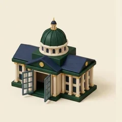

김보미를 소개합니다
정치 13년, 의정 8년. 지방에서 시작한 변화가 대한민국을 바꾼다는 말을, 구호가 아니라 기록으로 증명하려 합니다.
“민주당의 적통은 혈통도 계파도 아니죠. 계란으로 바위를 쳤던 김대중, 노무현의 도전 정신입니다. 저는 그 도전의 적통을 잇는 호남청년 김보미입니다.”
김보미
스물셋에 “내 고장 강진에서부터 대한민국을 바꿔보겠다”며 입당했습니다. 스물여덟에 지역 최초의 청년 군의원이 되었고, 서른둘에 전국에서 가장 젊은 기초의회 의장이 되었습니다. 계파도 조직도 없이 풀뿌리에서 배운 것은, 사람만 바뀌고 제도가 그대로면 정치는 제자리로 돌아온다는 사실입니다. 그래서 지금은 밀실을 여는 시스템을 만듭니다. 243개 지방정부와 62개 부처의 장부를 시민이 직접 들여다보는 우리동네365가 그 첫 번째입니다.
- 현
- 재정주권시민행동 공동대표
- 현
- 전남대학교 총동창회 부회장
- 전
- 제9대 강진군의회 의장(전반기) · 전국 최연소 기초의회 의장
- 전
- 제8·9대 전라남도 강진군의회 의원
- 전
- 더불어민주당 당대표 예비후보(2026 전당대회)
- 전
- 더불어민주당 참좋은지방정부위원회 상임위원
- 전
- 더불어민주당 청년정책연구소 부소장
- 전
- 더민주전국혁신회의 상임대표 · 더민주청년혁신회의 상임대표
- 전
- (사)한국청년문화예술인협회 창립회장
- 졸
- 강진고등학교(26회) 졸업
- 졸
- 전남대학교 졸업 · 일반대학원 석사 수료
걸어온 길
정치활동 13년, 의정활동 8년. 여성·청년·지방의 힘으로 “지방에서 시작된 변화가 대한민국을 바꾼다”를 실력과 결과로 증명해 온 시간입니다.
더불어민주당 입당
‘내 고장 강진에서부터 대한민국을 바꿔보겠다’는 꿈으로 내디딘 변화와 혁신의 첫걸음.
지역 최초의 청년 군의원
4개 군 합산 1순위로 당선됐습니다. 강진군의회 역대 최연소, 지역 최초의 20대 여성·청년 의원.
전국 최연소 기초의회 의장
강진군 가·나 선거구를 통틀어 최다득표로 압도적 재선, 전국 최연소 의장으로 선출. 업무추진비 전면 공개, 역대 최대 규모 낭비예산 삭감, 사상 최초 ‘일문일답’ 군정질문을 도입했습니다.
굽히지 않은 시간
표적 징계, 여론조사에서 이름 배제, 100건이 넘는 허위·비방 보도. 고소·감사·수사는 전 건 혐의없음·불송치로 끝났고, 허위보도 손해배상 소송은 승소했습니다. 불공정에 굽히지 않았습니다.
청년 정치 플랫폼 구축
더민주전국혁신회의 상임대표를 맡아 더민주청년혁신회의를 출범시켰습니다. 지역과 중앙을 잇는 청년 정치 플랫폼을 설계·운영했습니다.
강진군수 도전
강진군수 당내 경선에 나섰습니다. 개소식은 화환 대신 3,000원짜리 공약집으로 채웠습니다. 당헌·당규에 없던 감산 규정이 경선 직전에 생겼고, 불공정 경선 감산의 벽에 막혀 2%를 넘지 못했습니다. 그 규칙을 바꾸는 일이 지금 제 일입니다.
불공정 2% 경선의 벽에 막혔지만, 약속은 지킵니다 — 김보미365
군민과 한 약속을 지금 있는 자리에서 지킵니다. 강진군의 예산과 집행을 군민 누구나 휴대폰으로 보고, 민원과 정책을 확인할 수 있는 김보미365.com을 직접 만들었습니다. 선거는 끝났지만 군민과의 약속을 지키며 소통하고 있습니다.
당대표 예비경선 완주
선거운동 나흘로 당대표 예비경선을 완주했습니다. 본경선 문은 열리지 않았지만, 최고위원회 해체·컷오프 득표 결과 공개·청년최고위원제 도입을 요구하는 서명운동을 벌였습니다(2026.10.22 접수 종료). 기록관에서 원문 보기 →
강진에서 전국으로, 세금의 주인을 국민에게
강진에서 시작한 김보미365를 지방정부 243곳과 중앙정부 62개 부처로 넓혔습니다. 예산·집행·계약을 누구나 3초에 확인하는 우리동네365를 직접 만들고, 재정주권시민행동 공동대표로 세금의 주인이 국민이라는 원칙을 숫자로 확인합니다. 불공정한 규칙을 겪어 봤기에 물러서지 않습니다. 감시는 촘촘하게, 공개는 넓게.
주요 의정 성과 — 변화와 혁신의 자치분권 2.0
8년의 의정활동, 데이터와 결과가 실력을 말해줍니다. ※ 제8·9대 전라남도 강진군의회 의원 · 제9대 전반기 의장 재임 기간의 성과입니다.

투명성 · 소통열린 의회
- 제8대 4년치 언론 노출(약 970건)을 제9대 단 1년 만에 돌파
- 업무추진비 사용내역 정보공개 게시판 상시 전면 공개
- 유튜브로 본회의·행정사무감사 실시간 생중계
- 페이스북·인스타그램·블로그 신규 개설 — 조례·의사일정·입법예고를 카드뉴스로 전달
일하는 의회
- 개원 이래 최초 ‘일문일답 군정질문’ 도입 — 집행부 정책 실시간 검증
- 역대 최대 규모 낭비성 예산 108억원 삭감 (2023 본예산 4,790억의 2.25%)
- 역대 최다 행정사무감사 시정요구 195건
- 조례 165건 제·개정(제8대 전반기 대비 +44%) · 대표발의 24건 · 조례정비특위 운영
체감형 복지
- 전남 최초·전국 최고 수준 강진형 육아양육수당 — 소득·자녀수 무관, 자녀 1명당 만 7세까지 월 60만원(아동 1인 최대 5,040만원)
- 시행 후 출생아·전입 인구 증가 + 전액 지역화폐 지급으로 골목경제 활성화
- 8년 연속 12월 의정활동비 전액 지역아동센터 기탁
- 의장 재임 중 육아양육수당 지원 조례 제정
숙원 해결
- 강진~마량 4차선 확·포장, 강진만 패류 보상금 신속 지급, 월출산 생태탐방원 유치, 호남고속철 강진 구간 연장 등 대정부 건의
- 군의원–도의원–국회의원 ‘원팀’ 공조체계 구축
- ‘도군도군 신강진 공부 모임’ 정례 추진 — 현안 공유·공동 전략 마련
365일, 함께한 순간들
사진 위에 마우스를 올리면 멈추고, 누르면 크게 볼 수 있습니다.
지금 하고 있는 일
 지방정부 243곳 · 중앙정부 62개 부처우리동네365우리 동네 시청·군청·구청이 올해 예산을 어디에 잡았고, 얼마를 썼고, 어느 업체와 계약했는지 3초에 확인합니다. 중앙정부 부처별 예산과 2027년 정부안까지 한 화면에서 봅니다. 행정안전부 지방재정365와 열린재정 공식 자료를 그대로 불러옵니다.
지방정부 243곳 · 중앙정부 62개 부처우리동네365우리 동네 시청·군청·구청이 올해 예산을 어디에 잡았고, 얼마를 썼고, 어느 업체와 계약했는지 3초에 확인합니다. 중앙정부 부처별 예산과 2027년 정부안까지 한 화면에서 봅니다. 행정안전부 지방재정365와 열린재정 공식 자료를 그대로 불러옵니다.
 시민단체 · 예산 감시 운동재정주권시민행동 ↗“내 돈은 내 권리다.” 2026년 예산 59개 기관, 세부사업 7,796건(2026.10.3 taxwatch.kr 기준)을 하나하나 뜯어 누구나 볼 수 있게 공개한 시민단체입니다. 김보미가 공동대표를 맡고 있습니다.
시민단체 · 예산 감시 운동재정주권시민행동 ↗“내 돈은 내 권리다.” 2026년 예산 59개 기관, 세부사업 7,796건(2026.10.3 taxwatch.kr 기준)을 하나하나 뜯어 누구나 볼 수 있게 공개한 시민단체입니다. 김보미가 공동대표를 맡고 있습니다.
시골쥐가
김보미
나라 장부를
엽니다.